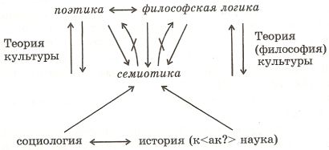

К Философии Культуры
Здесь собраны (под условным общим заголовком, данным составителями) материалы, посвященные логике культуры, особенностям культуры XX века и специфике современной философии как философии обоснования культуры. Это в основном машинописные тексты, написанные в форме тезисов, выправленные автором и снабженные авторскими примечаниями. Два из них были объединены самим автором под заголовком «Логика и идея культуры». Остальные материалы подобраны составителями. Мы руководствовались единством затрагиваемых проблем и общим подходом к культуре и философии, объединяющим эти тексты. Тезисы эти были написаны в разное время на протяжении более 10 лет (самый ранний из них – «Тезисы о культуре. Вариант 1976 года», самый поздний – «Философия в культуре XX века», самый конец 80-х годов). К сожалению, точное время написания этих текстов нам не удалось установить. На своем домашнем семинаре В.С. Библер прочитал в конце 80-х серию докладов под общим названием «Трижды осмысленная культура», в которых подробно развивал оригинальную концепцию культуры (культура как способ самодетерминации; культура как сотворение мира впервые, на грани с варварством; культура как диалог культур – в единстве, споре и взаимодополнительности этих трех осмыслений). К сожалению, аудиозаписи этих докладов и подготовительные материалы к ним не найдены, однако собранные здесь тезисы дают представление об общей идее концепции и основных поворотах мысли. Близкие проблемы и мотивы затрагиваются в записях этого времени из «Заметках впрок» и в других работах; самые существенные переклички мы отметили в комментариях.
ЛОГИКА И ИДЕЯ КУЛЬТУРЫ
I. ТЕЗИСЫ О КУЛЬТУРЕ (вариант 1976 года)
1. В ХХ веке реальный жизненный пафос определения культуры и – главное – проблем культуры – это противопоставление двух форм исторической "наследственности" человека: формы "образования", характерной для XVIII-XIX веков, и формы "культуры", становящейся центральной, всеопределяющей в ХХ веке. (В прошлые эпохи понятие культуры было возможно не выделять из круга близких понятий, соединяемых с культурой при помощи равнодушных "запятых". Сейчас возникла особая проблема, определить и осмыслить которую в свете противопоставления образования и – культуры, или, – обычнее, – цивилизации и культуры наиболее продуктивно).
"Образование" – "наследственность" векторная, линейная, наиболее тщательно осмысленная в философии Гегеля, но впервые сформулированная Просвещением. Образ идеи "образования" – образ лестницы, по которой – ступенька за ступенькой – взбирается человеческий разум, все выше и выше. Это – Ньютоновское: "я – карлик, стоящий на плечах гиганта" (гигант здесь: восхождение человеческого духа, взятое в целом, в совокупности гегелевских снятий). В XVIII -XIX веках (и ещё ранее, но с поправкой – с XVII века...) "культура" могла быть понята только как функция, производное от идеала образованности, или – как интегральное представление процесса образования... Наиболее полным воплощением идеи образования была наука и особенности её развития. (Замечу в скобках: именно образовательный смысл, смысл "перемотки" всеобщего знания – в ум индивида – позволял наиболее четко сформировать смысл и миссию науки. Обычно это соотношение переворачивается...)
Культура, в её собственном, существенном для ХХ века, пафосе, – это "наследственность" увеличивающегося числа самостоятельных, уникальных, сопряженных друг с другом в диалоге (не в "снятии") типов культуры, "формаций культуры", не сводимых друг к другу и не снимаемых друг в друге в лестнице просвещенческого восхождения.i(Тавтологическое введение понятия культуры для определения понятия культуры – не небрежность и не логический круг. Смысл такого странного логического хода будет ясен в дальнейшем изложении).
Образ культуры – это трагедия, пьеса с всё большим числом действующих и взаимодействующих лиц. Это – ремарка, к примеру, из "Горя от ума": "явление Пятое, те же и Софья". Появление "Софьи" (нового культурного целого) не снимает, не поглощает других персонажей пьесы. В диалоге в трагедийных коллизиях "Софья – Чацкий", "Софья – Фамусов", "Софья –Лиза"... раскрываются, да и заново формируются, новые черты, и новые страсти, и новые мысли уже давно вышедших на сцену – Чацкого, Фамусова, Лизы...
Или, скажу без сравнений: в сопряжении с культурой Нового времени культура и Образы (живые средоточия) культуры Античности, – Библейского мира, – Евангелия, – Средневековья, – обнаруживают и – это существенно – вновь, впервые образуют свои собственные уникальные особенности, силы, тайны, ответы, вопросы, возможности.
Определенная историческая эпоха продолжает (или – начинает?) после своего "физического" исчезновения существовать как культура в той мере, в какой она смогла (успела) осознать и переопределить себя в качестве сигнала "SOS ", обращенного (вопрос – ответ – вопрос... ) к иным культурным мирам.
Культура это – всегда – диалог культур, трагедия взаимонеобходимости и взаимоотталкивания (все большее отстранение), замыкания «на себя» различных, совершенно уникальных культур. Пока нет спора, трагедийных коллизий, сталкивающих между собой абсолютно замкнутые, несводимые (ни друг к другу, ни к некой "мета-культуре"...) культуры, – нет культуры вообще и нет необходимости в обособлении этого понятия.
Как говорил Бахтин: "Внутренней территории у культурной области нет; она вся расположена на границах, границы проходят всюду, через каждый момент её... Каждый культурный атом существенно живет на границах, в этом его серьезность и значительность; отвлеченный от границ, он теряет почву, становиться пустым, заносчивым и умирает"1. Причем, граница между различными культурами оборачивается и границей внутри каждого атома данной культуры, границей между феноменами и репликами этой культуры.
Культура (одна, вот эта...) есть лишь тогда, когда есть "две" культуры, – в их сопряжении, в их взаимной обращенности, в их границах. (Вот, кстати, смысл того выше образованного "логического круга", который являлся лишь моментом точного определения).
Но это значит также, что время культуры – это всегда настоящее, – настоящее, протяжённое в века. Для культуры нет прошлого и будущего (в векторном смысле); во "времени и пространстве культуры" Античное и Новое время со-существуют, со-бытийствуют, они – живут, они – активны, они – обе эпохи! – развиваются в спорах и в трагедийных коллизиях. Но – не теряют своего первородства.
И – вот ХХ век. Это – век, когда все проблемы культуры (и бытия человека в культуре) становятся центральными, определяющими, фокусирующими для всех иных отношений и коллизий, мучающих наше сознание, – в том числе и для отношений образования (и – науки). Ранее культура была периферией, существенной и явной только для феноменов искусства; сейчас "наследственность" в контексте культуры становится решающей и для науки (скажем, принцип соответствия и принцип дополнительности в физике), и для практической деятельности (основной сферой деятельности человека, работника все более становится само-деятельность, изменение собственной способности действовать – все остальное препоручается автоматам...( и для всех иных форм творчества и рефлексии).
2. В такой ситуации понятие "человек культуры" перестаёт быть синонимом и производной от понятия "человек образованный" Решающе изменяется основное определение личности.
Быть культурным (если разорвать и заново образовать этот фразеологизм) означает: трагически – и исторически основательно, "культурно"! – освоить и столкнуть в себе ("те же, и Софья"...) и ту коллизию формирования и трагедии личности, которая, скажем, существенна для Гамлета, которая есть Гамлетовская коллизия "бытия человека в мире..., в людях...", – и ту коллизию, трагедию "бытия в мире", которая существенна для Фаустовского определения личности, для Фаустовского бытия культуры..., и ту трагедийную коллизию, которая есть зерно трагедии "Дон-Кихот – Санча-Пансо", "Дон-Кихот – мельницы", "Дон-Кихот – ...".
Это, конечно, не исчерпывающее перечисление, но только намёк на суть дела.
Я назвал лишь два-три определения личности современного культурного человека. Но ведь в трагедию (в формирование, в образование...) культурной личности необходимо включаются и Античные, и Библейские, и Средневековые образы, коллизии, формы "бытия в мире", "формы бытия миром", иные формы культурного общения между людьми, человека к человеку.
Вообще, для отдельного индивида культура – это исторически развитый способ (способность?) бытия "в образе", но – (NB !) без отождествления с ним.... Это – исторически определённая система во-ображений и пре-ображений индивида.
Да ещё не забыть, что все эти "круги личности" – в культурном человеке – не только спорят между собой (так возникла глубинная "трагедия трагедий", не сводящаяся к трагедиям, входящим в неё), но необходимо – и в этом катарсис! – соединяются, сливаются в данную, уникальную, неповторимую личность-индивидуальность.
Вот, примерно, смысл понятия "человек культуры". Но –
3. Существенной гранью (границей=определением) культуры и, соответственно - "человека культуры" является вне-культурность – вечное нисхождение в хаос бесконечно-возможного мира… и – вечное о-пределивание этого хаоса новым культурным эйдосом, космосом. Человек действительно культурен, когда он способен (у него развита способность...) творить культуру и спор культур заново, из небытия культуры, из своего стихийного и уникального бытия. Иначе это будет не культура, но дешёвый эстетизм, манерность, эрудиция, энциклопедия... Культура, настоящая культура состоит в том, – я говорю сейчас об истории культуры, об исторической культуре, – что она обладает этой силой: развивать в человеке способность становиться вне-культурным, но склонным к культуре, к творчеству культуры, человеком. Особенно явно это раскрывается в искусстве.
Так, поэзия – это искусство творить язык, создавать заново речь (историей развитую и накопленную), – именно создавать заново, впервые, а не говорить на "знакомом наречьи" (У Шиллера: "Если стишок ты сложил на знакомом наречьи, что мыслит и говорит за тебя, – думаешь, впрямь ты – поэт?"). Каждое слово в стихе – это и известное, всеобщее, общее слово, и – слово, только в этом ритмическом и звуковом целом рождённое, живущее, абсолютно (в этом стихе) слитое с предметом, с вещью, созданной из звучаний ритмов. Не бывает стиха "о дожде". Этот стих – дождь, но дождь единственный, неповторяющийся.
Так, живопись – это сила, способная заново (по-разному, но одинаково необходимо в художнике и в зрителе) творить видение мира, заново творить краску – как плоть.
Но так не только в искусстве, так – во всех сферах культуры.
Культура – это не только диалог культур. Это – диалог культуры и вне-культурности, космоса и хаоса. Культура – это всегда канун культуры, это исторически развитая способность (и формы бытия этой способности) создавать культуру впервые. Вне этого парадокса культуры нет.
4. В определении культуры существенна её целостность, её неделимость на части, виды и подвиды: есть Античная культура, или – можно взять уже: есть культура древних Афин, но нет – отдельно – греческой скульптуры, или греческой трагедии, или – греческой философии...
Но это уже особая проблема.
II. ЕЩЁ К ОПРЕДЕЛЕНИЮ И ПОНИМАНИЮ КУЛЬТУРЫ
(После доклада Ю.М. Лотмана 17.XI .80ii)
1. Исходный тезис: без семиотики нельзя войти в теорию культуры, с семиотикой нельзя из неё выйти, нельзя её осуществить...
Или: Теория культуры – это семиотика, отрицающая себя в своём предельном выражении (...в своей истине...) – в поэтике" (уже – не семиотике, противо-семиотике). Или: Теория культуры – это семиотика, отрицающая себя... (см. определения, данные выше) – в философской логике. Но ни "семиотика" (сама по себе, не доведенная до отрицания, не уничтожающая себя), ни "поэтика" (сама по себе, взятая не по отношению к семиотике), ни "философская логика" (взятая не как истина семиотики, или философии истории, или – по отношению к поэтике...) – теорией культуры не являются.
Это же отношение может быть продолжено "вниз": теория культуры – это "социология" (в другом плане - история...), отрицающая себя в семиотике и, далее – в философии (теории) культуры. Тут существенно сопряжение двух пар предельных, запредельных для теории культуры, полюсов: поэтики и – философской логики ("сверху"...), истории и – социологии ("снизу"...). Поэтика и философская логика – "высшие" запредельности теории культуры. Социология и история – "низшие" запредельности. В схеме все это может выглядеть так:
СХЕМА 1

2. Чтобы объясниться и наполнить содержанием только что сформулированное, вернусь к истоку и сформулирую саму проблему культуры, культуру как проблему (в свете духовного пафоса ХХ в.)
Проблемы культуры (в их всеобщности и насущности, в необходимости понять культуру в её отличии от цивилизации, от образованности, от формации и т.д. но, вместе с тем, – как феномен и ноумен столь же всеобщего значения, ничего помимо себя не оставляющего...) возникают – это для резкости различения – из таких наивных вопросов –
1) Вопрос – В какой форме продолжает быть и развиваться "цивилизация" (или, скажем, "формация") после своей физической, социологической смерти, в какой форме бытийствует (а не растворяется в последующих стадиях развития, – если, все же, не растворяется) Античность, или Средневековье, ... – в ином времени, в иной эпохе?? Не в качестве "вещных остатков", но в качестве продолжающего действовать (?) субъекта, нерастворимого, непреходящего, себе тождественного? ( NB – предельная острота и парадоксальность этого вопроса именно для ХХ века).
Ответ – В форме культуры! В форме культуры существуют (культурный "спиритизм"...) "древние греки", когда все "древние греки" вымерли аки обры. Теперь обернем эту проблему на отдельную "вещь" и на "читателя" –
2) Вопрос – Существуют ли картины Рембрандта, или "Диалоги" Платона, или Собор Святого Петра, или "Медный всадник" Пушкина – для человека ХХ века, – только как "знание всех тех богатств, которое выработало человечество...", или как нечто незнаемое, действующее, диалогизирующее со мной, вне-положное мне, плотное и – так же как "вещь природы" – абсолютно неисчерпаемое? Если и существует вот так, не снято, а "чуждо", то что это за форма их (уже не целой цивилизации, но "продуктов деятельности", взятых отдельно, самостийно) – бытия??
Ответ – Да, существуют именно так, и это бытие в форме культуры.
И читатель, так воспринимающий "прошлое", это – "культурный человек", не сводящий объект к своему знанию о нем (как это делает человек образованный), но воспринимающий данную, сотворенную человеком вещь, как уникального, неповторимого и совершенно иного чем "Я" субъекта, – не как овеществленную "сумму знаний", но как Участника диалога, Собеседника, столь же бесконечного, как ... природа, но – конгениального мне... Понимать этого Собеседника необходимо; знать его – невозможно. Слава Богу – невозможно.
3) Вопрос всех этих вопросов: В какой мере, в каком смысле моё собственное бытие, бытие моей эпохи существует (и – существует ли?) в этой форме, в форме культуры, то есть, как нечто мне чуждое, бытийствующее так, "как если бы..." оно было после моего исчезновения, диалогизирующее со мной самим, как нечто (ещё и уже) не существующее в наличном времени (= существующее в "вечности"). В каком смысле все "моё время" (ещё неисчерпанное ) уже сейчас, в этот момент, есть – все целиком, – бытие завершенное, закругленное на себя, замкнутое, замкнувшее свой круг бытия и начинающее свою спираль бытия в иных (квази-одновременных) веках???
Но этот решающий вопрос имеет и свою социально-логическую сторону.
Речь идет не (только) вообще о современности (любой) как культуре, но об особых характеристиках ХХ века.
В наш век проблема культуры становится всеобщей проблемой бытия (= становится проблемой), поскольку в контексте коренных коллизий ХХ века все предшествующие эпохи и все рядоположенные (Восток, Запад) цивилизации встраиваются в одно "квази-одновременное" пространство культуры, культурных диалогов. Оказалось (?), что Античность, Средневековье и Новое время не ушли в прошлое, не снялись в настоящем, но – именно сейчас с особой силой, – замкнулись, закруглились на себя, обнаружили свою решительную неповторимость, инаковость по отношению к современности, абсолютную (логическую) несовместимость с ней (в этой несовместимости и современная культура закругляется как культура, ещё до своего "социологического исчезновения"), и – вместе с тем, – они, эти "прошлые" (со-временные) культуры обнаружили свою предельную насущность, необходимость, вопросительность для культуры ХХ века, для ХХ века, как культуры.
(Сейчас не буду говорить о собственно социологических определениях этой предельной ситуации ("социум совместного и социум всеобщего труда" и т.д.), подчеркну только ещё раз бытийный смысл "проблемы культуры" в жизни человека ХХ века, точнее – трагедийно бытийный смысл "жизни в культуре"...)
Не-обходимость проблем культуры для нашего времени обнаруживается, ну, хотя бы, в такой форме: где же собственное, своё бытие культуры ХХ века (острее – где собственное бытие человека ХХ века), если век этот весь поглощен встречей, диалогом ( иной раз – свирепым диалогом) иных культур, смыканием чужих завершенностей?
...Вернемся теперь к первым вопросам, требующим понимания того, "что есть культура", и замкнем весь контекст вопросительности проблем культуры в ХХ веке.
...Сама постановка этих вопросов и "ответ" на них ( = переформулировкакаквопросов) – и есть определение культуры. Эти вопросы раскрывают, в какой связи я задумываюсь о культуре, в каком повороте она выступает как загадка, как неизвестный предмет определения (а не – определение предмета). Сама наивность и раздражительность этих вопросов андерсеновского мальчика из "Нового платья короля" все время должны оставаться и обостряться на любых, самых утонченных высотах "теории культуры". Если исчезнет неожиданность и раздражительность этой вопросительности, удивительности бытия культуры, бытия в культуре, – сразу же исчезнет смысл всей философии культуры.
3) Понятийно осмысленная, эта вопросительность (=определение) культуры приобретает примерно такой вид:
Проблема культуры – это проблема "запечатленного" (в вещах) автора, субъекта деятельности; проблема вещей, так созданных человеком, что он продолжает в них жить как действующее (в образе) лицо, способное бесконечно менять и развивать свой собственный "итог", своё воплощение. Но – действовать и жить и развиваться только –
— Во-первых, в диалоге с тем, кто "прочитывает" эту вещь, распечатывает её. То есть, только если воплощающая меня вещь ("вещая вещь") запечатлела мою насущность в ином, мою жажду абсолютно иного собеседника, обращение к нему, мою (совершенную) незавершенность, ожидание того Мандельштамовского или Баратынского "далекого читателя" – "И как нашел я друга в поколеньи, читателя найду в потомстве я..."iii
— Во-вторых, жить и развиваться и творить так, чтобы все время возвращаться к себе, быть себетождественным, этим. Античность (как культура) может создавать в иных веках новые тексты (используем, несколько преждевременно, это слово), но это будут тексты античные. Шекспир будет в веках бесконечно переписывать Гамлета, но это всегда будет Шекспировский Гамлет, будет Гамлет, всегда тождественный – до точки, до запятой, – неизменному тексту исходного "Гамлета", исходной Гамлет-трагедии человеческой личности. (Степени полного определения все эти соображения достигают по отношению к культуре как целому (Античность и т.д.).
Все только что сказанное приобретает особую остроту и всеобщность именно по отношению к особенному – к возможности бытия (ещё не завершенного бытия) живого меня – в форме, в смысле бытия культуры, – "запечатленного", совершенно "завершенного" бытия.
Можно, таким образом, сказать, что проблема культуры, это проблема вторичной творческой системы (в аналогии с вторичной знаковой системой), вторичного творческого бытия, – уже отделенного от "физиологического" меня (пусть в интенции), – вечно запечатленного, – и продолжающего быть, создавать, меняться. Проблема "первичного творческого бытия" – это ещё н е проблема культуры (и соответственно – не проблема теории культуры) – это проблема психологии, или социологии творчества, или – в предельных теоретических воплощениях – проблема философской логики, где – в трансдуктивных точках, в парадоксах логики, – культуры ещё (и уже) нет, а есть её "возможность" и её "снятие". Но об этом детальнее дальше.
Вот теперь можно подойти (вернуться) к исходному афоризму о том, что "без семиотики нельзя войти в теорию культуры, а с семиотикой нельзя её осуществить", или к афоризму о том, что "теория культуры есть семиотика, отрицающая себя в поэтике" и т.д. Но это уже будет следующий момент нашего анализа –
4) Это – проблема текста.iv
Культура – текст (знак, означение, означаемое; метафора – метонимия, ось се<нрзб> и ось <нрзб> и …), но – вот граница семиотического подхода:
а) Текст – "культура", если введен круг вопросов, в котором понятие текста эквивалентно понятию культуры (одновременность культур, их а<нрзб>ность, их диалогичность, прот<ивопоставленн?>ость образованию и т.д.). Тогда – ответ на вопрос – понять "текст" имеет смысл – смысл <культурологический?>.
б) Но в этом круге вопросов "текст" <нрзб> как встреча двух голосов и встреча в себе двух сознаний и теряет характер понятия информации.
в) "Текст текстов" – и текст-означающее и текст-означаемое, и их заново-формирование, но <нрзб> с информа<нрзб> уже не <нрзб> семиотика (он знал <незнание? > ). Семиотические нырки (лента Мёбиуса) в поэтику, а у той свои законы...
г) Текст – понимание – сознание – идея – мысль …
В начале <нрзб> где мысли нет, есть лишь возможность их формирования.
– сопряжение поэтической и философской речи.
д) Вообще NB – переход от значения к смыслу ( ср. Выготский ).
е) Проектир<ование?> читателей, по их включению в текст – тогда семиот<ика?> разруша<ется?>.
"Инт я" (?) о незнании.v
______
ФИЛОСОФИЯ — НАУКА — КУЛЬТУРА
1. Философия как наукоучение (Новое время) и философия как "культуро-обоснование" (ХХ век). Смысл этого противопоставления. Два пафоса "наследственности". Особая необходимость понятия культуры и её связи с философией (обоснование нового типа разумения ). Это – жестко и пока – вне генезиса.2Затем:
2. Генезис нового смысла философии –обоснование начала мышления - обоснование культуры. Доведение до предела логики Гегеля. Социально-культурные основания (ср. Шпенглер). Что делалось в самой науке. Предмет (мир) зажат между двумя (как минимум) формами разумения. Тогда (и только тогда) – объективен, но в новом смысле. Ср. ситуацию в философии, – проблема вписывания в исходное произведение. Как и что происходило между "философскими системами". Здесь ситуация в философии сущ<ественнее?>ее ситуации в искусстве.3
3. Наука –как феномен культуры.
а) Определение через отношение к искусству и философии (ср. "зажат между...") Так же, как... Я познающий в его логической и эстетической <форме?>.4
б) Обращение науки на культуру. Особый тип нравственности; изменение своего мышления ( иначе – не наука), особое значение незнаемого, неизвестного ; соотношение конструктивности и раскрытия того "как он есть в себе...". Особый социум всеобщего труда, это уже не через отношение к культуре философии или искусства, но собственно через связь: наука↔производство↔социум. Коллизия начала ХХ века, его середины (ХХ век "исчезает") и его окончания – в контексте проблем свободного времени, как времени бытия в культуре, действия н а себя и т.д.
в) Возможные трансформации в науке.
К тезису 1
а. Основной смысл противопоставления: "образование" – "культура", насущного в ХХ веке: две формы духовного наследования, формирования индивида, обогащенного историей; культура и идея времени; человек образованный и человек культуры; что означает разуметь нечто – в образовании и в культуре.
б. Образование и наука. Обращаемость форм их сопряжения. Что исходно...
в. Наука и наукоучение – как влияет на философию. Познающий разум и его границы. Философия как культурообоснование.
К тезису 2
а. Предельность познающего разума, нетождественность познающего, картезианского "Я". Метод Гегеля и аннигиляция познающих определений разума.
б. Предельность "аксиом" науки. Тождества "предела и беспредельного" – ничто и нечто, бесконечности потенциальной и актуальной. Системы и дедукции.
в. Предмет, зажатый между разумами.
г. Трансформации в социуме.
д. Трансформация в самой культуре. Шпенглер и Бахтин.
е. Значение аналогий с искусством и философией...
К тезису 3
а. Наука внутри культуры, а не на границе.
б. Культурное значение науки. Теоретического мышления.
в. Трансформации в науке. ХХ (?) век.
______
ТЕЗИСЫ К ФИЛОСОФИИ КУЛЬТУРЫ
Тезис первый.
Если философия Нового времени была логикой (философской логикой) "наукоучения", то философия после-Нововременной эпохи становится, может формироваться (в качестве философии) только как логика культуры. Или, – немного раскрывая скобки: философия Нового времени (XVII – XIX вв.) обосновывала "начала" научного (теоретико-познавательного) мышления в его всеобщности; она обосновывала эти начала в идеализации — предположении — его (познающего разума) суверенности и единственности. Тем самым логика наукоучения выходит и за пределы "науки", обосновывая её (науки) возможность, обосновывая бытие (мира), в котором она возможна и действительна, а значит, раскрывая эти начала там, где науки ещё нет и где все её основания сами должны быть обоснованы (двусубстанциальность мира, предельность идеи причины, единственность разума с исключением философского смысла многоразумия и т.д.). Иначе в ХХ веке (я употребляю понятие "ХХ век" в некотором условном смысле, не в смысле чистой хронологичности, но в смысле несводимости неких существующих в этом веке феноменов к логическим идеализациям прошлых эпох, хотя в хронологическом ХХ веке феноменологически "сводимого" гораздо больше, чем "несводимого" и оно более массивно) философия (философская логика) встаёт перед задачей обосновать начала культуры (?) в её всеобщности и единственности там, где её ещё нет, но где она логически возможна (= насущна; = необходима). Что сие означает?
Тезис второй.
В "ХХ веке" нарастает решающий конфликт двух форм человеческого бытия, социальности, разумения, двух форм детерминации этого бытия. Во все прошлые эпохи формы эти (см. ниже) уживались, взаимодействовали, "дополняли" друг друга (в началах "науки" это сказывалось особенно ясно и фундаментально). Это:
– 1. Детерминация человеческого бытия, сознания, мышления (но, значит, и сама определённость, онтологический смысл бытия мира в его "сущести" и сущности и бытия человека "в нём"...) извне и "из нутра". Извне – из исторических и социально-экономических структур, из космических воздействий, из "нутра" – из физиологических, генетических, "мистических" предопределенностей... (с учетом некой симметрии "познавательного" и "практического" действия "от" человека, во-вне (действие на...).
– 2. Другая детерминация – это слабые "поля" "самодетерминаций" (см. ниже). В ХХ веке детерминация "извне" (и из "нутра"), во-первых, в громадной степени возрастает (экономические мега-структуры, тоталитарные государства, воздействие технической предопределенности "моих" действий), и во-вторых, заново обнаруживается , но, тем самым, с особой силой воздействует на наше сознание. Это – "космическое облучение", в любых его формах, приобщение к единому разуму, силы (реальные и воображаемые, – это не существенно) телепатического и другого характера, мощная сгущенность разного типа "коллективностей", от идеи "нации", "Востока" и "Запада", до коллективностей квази-культурологического типа.
Но, с другой стороны, хотя и очень странно, неуклюже в это же время растут силы самодетерминации, феномены самодействия. Основа этого роста: НТР, сдвиг к цивилизации свободного времени и "всеобщего труда", особые формы искусства, разрывы однонаправленных исторических детерминаций и ценностных спектров, ситуации выбора этих ценностных "отслоений" и необходимость собственных решений, изменение типов социальности (война, окопы, революции, социальная динамика и т.д.). В контексте НТР направленные друг против друга рост сил самодетерминации и усиление детерминации "извне" (и из "нутра") не могут мирно разойтись по сторонам и ужиться друг с другом, они должны исключить друг друга. И это вопрос о началах (исходных определений) бытия и мышления, в совсем других, чем в наукоучении, обоснованиях. Требуется актуализировать и раскрыть возможность иного мира, в иной его всеобщности, иного мышления в иных его основах.
Исходные "начала" наукоучения (causa sui , монадность, фундаментальное сомнение...) все время замыкаются "на себя" и должны (но не могут) существовать уже не в качестве основ "чего-то иного" – причиной бесконечной цепи, познавательного движения "от..." и "на..." и т.д., но – в качестве саморазвивающихся начал. Должны рассматривать себя не только в качестве начал дедуктивной логики "наукоучения", но, прежде всего, в своей собственной форме (в форме обоснования и её действия одновременно)...
Тезис третий.
Человеческое бытие как процесс самодетерминации, самоопределения (и возможность "перерешения"), воли, сознания, мышления, судьбы – мы и будем определять как культуру (обосновывать возможность и всеобщность которой и должна новая философская логика). В этом определении соединяются: 1. привычная феноменология культуры ("что обычно подразумевают ...") – искусство, философия, наука, нравственность и т.д. и 2. философское осмысление современного бытия этих феноменов, в их резкой и определенной направленности против мощных сил "детерминации" "извне" (и из "нутра"), в их неукротимой "претензии" на всеобщность, единственность, суверенность, онто-логический статут. Итак, – повторяю:
Культура (в своём замысле, пафосе и экстраполяции "на всеобщность", "субъектность", а не на "атрибутивность" к иной бытийной и социальной всеобщности...) – это феномен самодетерминации человеческого бытия (и – сознания). Это – вся человеческая деятельность во всех её формах, все общение, все "мышление", как процесс "самоустремленности" и возможности (несмотря на мощные силы детерминации извне и из нутра) самому человеку, каждому индивиду самоопределять (и "перерешать") свою судьбу, жизнь, сознание, общение, историю и т.д. Культура как феномен самодетерминации позволяет отражать, преломлять, иначе направлять ... силы внешней детерминации, в невероятной мере усиливать возможности сопротивляться несоразмерно мощным воздействиям исторических "давно-прошедших" (Plus q uamperfectum ...) времен, или – космических приобщений.
В этом исходном определении существенно подчеркнуть:
(1) Культура как целостный феномен самодетерминаци подобна своего рода «пирамидальной» линзе, вживленной в хрусталик духовного зрения:
Основание феномена культуры – это Марксова "самоустремленность" всей (и предметной и идеальной) человеческой деятельности и всего бытия, – как деятельности, на самоё деятельность, на её возможность направленной;
Грани этой линзы – философия, искусство, теория, нравственность – не в их способности быть моментом “действия на…”, не в их функциональности в структуре наличных социальных структур (а такая способность, такая функциональность, такая социальная обоснованность в этих "гранях", конечно же, есть...), но в их определенности как моментов самодетерминации, как всеобщих, (зачастую – виртуальных) интенций деятельности самоустремления, формирующей возможность перерешения нашей судьбы – судьбы индивида в его самобытийности, а не в его бытии как "социальной роли", "функционера", "представителя класса" и т.д.
Вершина этой пирамиды – точечный акт самодетерминации, акт специфический и неповторимый для каждого человека.
(2) В целостной культуре осуществляется разрыв, рассечение наличных застывших структур бытия и общения (социума цивилизации) – каждый раз заново – осуществляется полагание социума индивидов, самим себе обязанных своим бытием и сознанием, индивидов, общающихся – "через произведение" – в пространстве и времени, вне обычных форм разделения труда (это – "социум всеобщего труда").
(3) Поскольку культура включает в себя и преобразует в себе всю деятельность человека, все формы его бытия ( застывшие во времени и пространстве), постольку бессмысленно говорить о "духовной культуре" и "культуре материальной". В контексте культуры все формы деятельности (вся практика...) оборачиваются как моменты духовного бытия человека, его самодетерминации. И осуществляют эту деятельность не только "творец произведений культуры", но каждый её читатель, зритель, слушатель (причем обе эти "силы" – "созидания" и "прочтения" – необходимы в деятельности и "творца" и "воспринимающего", – с различным перераспределением внутренних полюсов этого двойного процесса. Это – внешний (автор – "читатель" ) и внутренний (читатель в авторе, – автор – в читателе) атом культурного социума.
(4) Существенна также обращенность на себя, – и отсюда – исходная диалогичность самих актов самодетерминации (несовпадения меня с самим собой), и самого бытия индивида (в контексте культуры) как существа, во-первых, самодиалогичного и, во-вторых, несводимого к своим атрибутивным определениям (орудию, предмету, знанию и т.д.).
(5) Задача обоснования "начал" культуры – это задача развития такой логики, которая осмысливает начала всякого иного разумения (ср. начала наукоучения) как начала самозамкнутые и саморазвивающиеся в себе, не выходя за пределы своей изначальности.
(6) Вернусь к образу "пирамидальной линзы":
Грани самодетерминации можно вкраце конкретизировать так:
а. Искусство ( эстетическая, художественная самоустремленность всего нашего бытия, фокусированная в определениях искусства в собственом смысле). Общение (с другими и собой), заданное и детерминированное извне, исторически, предметно-орудийными, социальными структурами и "из-нутра" (эрос...)становится в искусстве творимым изнутри общением с другим как с собой самим, с собой – как с другим, с Ты. Общение формируется заново, история переигрывается (в прошлое и в будущее). Общение осуществляется в искусстве как разумный акт , полагающий – навсегда – новый и постоянно растущий "микро-социум" культуры. Это заново (в плане самодетерминации) творимое общение осуществляется – в веках – через отстраненную и рефлектирующую плоскость художественного произведения, – как своего "органа", переформулируется в веках, разворачиваясь "из плоскости" в бесконечный "объем", переосмысление как твердый, неделимый "атом" этого разрастающегося социума культуры.
б. Философия. Моя мысль всегда жестко и непоправимо детерминирована логикой мышления (ее необходимостью), всем историческим и логическим ее – этой мысли – становлением и предысторией ( ведь данная моя мысль всегда лишь продолжение моих и не моих мыслей и выводов); в философии, в обосновании начал, м оя мысль, во- первых , порождается заново, изначально, абсолютно впервые и самоосновательно, а во-вторых, философствование строит, обосновывает – в его возможности, то есть в его небытии – мой и, вместе с тем, всеобще необходимый, бесконечный, единственный мир, актуализируя в бесконечность одну из возможностей, потенций бесконечно-возможного мира (мира, находящегося как бы накануне реализации, еще не действительного). Формируется бесконечный действительный мир этой возможности, скажем, мир идеального механического движения, или – мир как предмет познания (ср. – Декарт, Спиноза, Лейбниц), мир, невозможный для вне-мысленного бытия. В диалоге этих моих и его, моего Собеседника, всеобщих миров, (их обоснований) и осуществляется самодетерминация человеческой мысли и бытия в его много-бытийной возможности, то есть, ещё не- бытийности. И здесь есть непроницаемая "плоть" (к произведениям в искусстве) – это онтологически значимый мир (бытие) "по поводу которого" идет спор актуализированных логических вселенных. И чем больше разумов – Собеседников нашего философского спора, тем более этот, бесконечно-возможный мир, непоглощаем (выталкиваем...) каждым возможным мысленным миром (логикой) в их отдельности.
____
ФИЛОСОФИЯ В КУЛЬТУРЕ ХХ ВЕКА
Тезисы
Вступление. Афоризм аббата Сийеса и сквозной тезис доклада.
Тезис первый. К определениям культуры и философии.
Тезис второй. Сдвиги в цивилизации и мышлении ХХ века к полюсу культуры.
Тезис третий. Кризис классической философии (наукоучения) в ХХ веке. Редукционизм и ...
Тезис четвертый. Какая философия насущна ХХ веку. Что мы предлагаем?! Немного о диалектике, логике начала логики и логике парадокса как философской логике культуры.
Тезис пятый. Но ... пустое место философии. Причины. Мистик а и рассудочность versus философская логика, versus новый Высокий рационализм. Историческая трагичность этой ситуации.
Заключение. Но ... Перевертень проблемы и истоки надежды. Снова: аббат Сийес и суть доклада.
Содержательно:
Вступление:
В канун Великой Французской революции аббат Сийес писал:
«Что такое третье сословие? – Ничто.
Чем оно должно быть? – Всем!»
Перефрази руя, возможно сказать так:
Чем является философия в культуре ХХ века? – Ничем.
Чем она должна быть? – Всем!
Обоснованию и осмыслению этого утверждения и посвящен настоящий доклад.
Тезис первый. К определению культуры и философии.
Чтобы понять основной ход обоснования, необходимо, – причем детально – сформулировать то понимание культуры и философии, что заложено в его основу. Это понимание, как я полагаю, связано с коренными изменениями в культуре и философии ХХ века, – но о них я буду говорить во втором тезисе. Здесь – перевертень: – началом будет тот вывод ..., который возникает у меня, живущего в наше время. И без перевертня тут не обойдется. (Немного о поэтике перевертней. ) И еще одно: я начну свои определения с культуры , поскольку основной замысел этого доклада – экзистенциальный, культурологический, а не чисто логический... Итак:
(1) К определению культуры .
В ХХ веке , на основе ряда социально-логических сдвигов – о них в следующем тезисе – оказалось возможным и необходимым вычленить особый круг феноменов человеческой духовной жизни из иных близких феноменов. – За этим кругом явлений приходиться закрепить особое понятие, – пусть это будет понятием культуры , в отличие от ранее тождественных понятий цивилизации, духовной жизни вообще, того, что "культивировано " человеком и т.д. Под культурой мы будем далее подразумевать следующий феномен:
А. КУЛЬТУРА – изобретен ный человечеством феномен самодетерминации (сознания, мышления, поступков, судьбы...), преобразователь детерминации, идущий извне (из экономических, социальных, исторически сложившихся структур ) и из "нутра " (подсознание, физиология, инстинкты, мистические силы, "космический разум "...) в силы самодетерминации (самоопределения) жизни человеческого духа. Это как бы особая "пирамидальная линза", вживляемая в хрусталик нашего духовного зрения (сознания) – острием вглубь. Эта линза отражает (отталкивает), преломляет, поглощает, в корне преобразует разнонаправленные силы детерминации, идущей "на" наше сознание извне и из "нутра" – в силы самодетерминации. (В горизонте личности – в осознании, переживании и осмыслении полной личной ответственности за прошлое и будущее,)
Грани этой линзы: искусство, философия, нравственность, теория, религия (? )... в совокупности произведений.
Вот первые наметки действия этих граней:
ИСКУССТВО. Общение (с другими), заданное и продиктованное извне, историческими и социальными структурами, становится в искусстве творимым изнутри общением с другим, как с самим собой, с собой как с другим моим Я ; общение формируется как разумный акт "на грани " моего самосознания, в решающих точках судьбы (акме, исповедь, фундаментальное сомнение, романное отстранение...). Это – заново полагаемое – общение излучается из художественного произведения, как "органа " такого – творимого, на века, общения, – в разворачивании из "плоскости " – в бесконечный объем – общения не между усредненными "представителями ...", но – между трудно сформированными в искусстве – личностями...
НРАВСТВЕННОСТЬ. Извне заданная детерминация моего поведения, поступка преобразуется в самодетерминацию выбора и нравственной пер ипетии. Прошлое и будущее собирается в точке настоящего, и моё Я оказывается полностью ответственным за свой поступок (в пер ипетиях "быть или не быть ", "убить и не убить ", "подчиниться року – подчиниться воле (свободе) своего решения ". Силой такого "сбора " и ответственности оказывается, но уже в другом плане – все то же общение с другим, с Ты, как общение с самим собой ... Объединением эстетической нравственной самодетерминации является регулятивная идея личности данного типа культуры. На полюсе эстетического – как момент навечного бытия личности; на полюсе нравственности как пер ипетия ее (личности) жертвы – другому Я .
ФИЛОСОФИЯ. Моя мысль, жестко и непоправимо детерминирован на я логикой мышления (ее необходимостью) и всем предшествующим логическим и историческим её (этой мысли) становлением (мысль – налично – всегда есть "продолжение "), в философском обосновании начала во-первых, порождается заново, изначально, а, во-вторых, философствование строит мой и, вместе с тем, всеобщий необходимый мир, актуализируя в бесконечность одну из возможностей, потенций бесконечно-возможного мира (мира, находящегося как бы в кануне реализации...). Формируется бесконечно-действительный (для мысли...) мир этой возможности, скажем, мир идеального механического движения, мир, невозможный для реального бытийного "кануна ". В диалоге этих всеобщих, на ничьей земле между ними, и существует и осуществляется самодетерминация человеческой мысли.
ТЕОРИЯ. Теория трансформирует содержание нашего сознания (эффицируемого воздействиями "извне " и из "нутра ") в его "перпендикулярных " связях (предмет – чувство...) в детерминацию, так сказать, "горизонтальных связей " – между предметами , внутри предметных структур, каждый раз "подставляя " под действие предмета вместо "орган а чувств " – некий иной предмет, или отстраненную (по отношению ко мне) "горизонтальную " предметную связь.
Наше сознание переформируется как (элиминирующая субъективность) описание и реконструкция предметов "как-они-есть-сами-по-себе... ". Детерминация "по отношению к человеку " просто выводится из игры. В сознании располагаются связи, имеющие смысл лишь в связи объектов, с исключением (это дьявольски сложно ) всяких коллизий типа "так мы это воспринимаем "... Связи типа "сущность – явление " (как будто "перпендикулярные ", на меня направленные) так же даны – в теории – "горизонтально ", дистанцированно от их восприятия. Здесь, в теории, нет еще перевода в самодетерминацию, но есть – необходимое для самодетерминации – отстранение связей "извне " и из "нутра "...
Теперь вернусь к образу линзы-культуры.
Вершина "пирамидальной линзы " (культуры) – сфокусированный – в действии ее граней – точечный акт самодетерминации (граней уже нет , есть одно острие...) 5
Основание : целостный процесс предметной (орудийной) деятельности , как процесс деятельности самоустремленной ( Selbstischtätig k eit – по определению Маркса) 6 .
Думаю, что секрет действия этой линзы – в особенностях её "основания". Поскольку человеческая деятельность (одновременно в том же отношении – общение) всегда устремлена на (но значит отстранена от...) самоё себя и своего субъекта, постольку определение деятельности человека как самоустремленной есть, вместе с тем, предопределение мышления, рефлексии.
На этом основании строится вся пирамида, в таких формах претворения общительной мысли, как: искусство, философия, теория и т.д. Эти грани и исполняют труд отсекания, преломления, преобразования внешних, подсознательных, даже – космически всесильных сил детерминации в силы свободной (в прошлое и в будущее) самодетерминации. Грани жестко отграничены друг от друга, каждая из них единственно всеобща и сходятся они только в точечном, не имеющем объема, акте самодетерминации, – выбора, решения собственной судьбы.7
(О культуре как равносилии неравносильных сил, – о вето на космическое "включение", – о духовной жизни в мистическом растворении и в бытии культурно-формирующей линзы. – О разных идеалах духовной и душевной жизни...).
Два взаимоисключающих и взаимопредполагающих напряжения (две регулятивные идеи...) в жизни индивида: регулятивная идея личности (см. детальнее в серии моих докладов) и регулятивная идея всеобщегоразума (см. определении философии). – Искусство и философия. (См. также – о разных формах превращения сил детерминации ("извне", "из нутра"...) в силы самодетерминации – в искусстве, – в философии, в нравственности, в теории... Ключевая роль (во всех этих формах...) двух регулятивных идей, – см. выше).
(Заранее ответ на вечный вопрос о различии "духовной..." и "материальной..." культур. Дело – не в формах воплощения (всегда – обязательно – в материале, в вещах, в их отражательно и преломляюще непроницаемой плоти...), но дело – в реализации духовных стремлений, стремлений самодетерминации, – это возможно (показать, каким образом) – и в "рычагах" или в "снарядах". Но – все же – особая роль собственно духовных – философия, искусство и т.д. – феноменов культуры.)
Это – смысл культуры – по её замыслу (квази-замыслу), по её целенаправленности (квази-целенаправленности).
Но – в качестве самостоятельного бытия такая сила (линза) самодетерминации возможна лишь в особом типе отношения к истории, в особом типе формирования историческойнаследственности. Этот тип, – характерный для культуры (как феномена самодетерминации) – со-бытие культур. Культура есть там, где есть две культуры... Только в диалоге (на грани) двух (и более) культур – возможен этот феномен самодетерминации. Где одна «культура» – я с ней срастаюсь, – и тогда уже культуры нет, есть цивилизация. Отсюда –
Б. Культура – versus "образование". О двух формах исторической "наследственности", или как возможна самодетерминация – в каких исторических точках?!
Против образовательного "снятия" (см. культуроформирующая одновременность разных эпох.) "Лестница" и действующие лица "трагедии". Ответ на вопрос "в какой форме, в каких формах человек, данная цивилизация продолжает существовать и развиваться после своей "физической смерти", после своего исчезновения с земной поверхности?" В форме культуры! В форме культурного общения.8
Со-бытие культур (и людей) на поверхности, на грани текста ... Текст и общение. Высказывание. Диалог, а не снятие... Этот же вопрос – к моей, этой жизни, – в какой форме я могу быть (как я ...) после... и т.д.? В форме произведений культуры!
Определение культуры и "произведение". О "кирпичиках" и о здании. Основы полемики со структуралистской, семиотической теорией культуры. Произведение и "лента Мёбиуса".viПолемика против идеи "детерминации" культуры извне. Смысл трансформации основ собственного бытия. "Редукция" и "трансдукция" в понимании феноменов культуры.
NB : "Образы культуры" и их смысл. Эдип. Прометей. Христос. Гамлет. Дон-Кихот. Фауст. (К вопросу – кто культурен?). Бесконечное и взаимопровоцирующее развитие культур на их "границе". Бахтин и мои идеи. Мышление и сознание; философия и поэтика – в отношении к общению в контексте культуры. К амбивалентности (внутренней самодостаточности) каждой культуры. К диалогу Западной и Восточной Культуры.
Еще и отдельно: текст; произведение; культура.9vii
В. Социум цивилизаций ( информация ) и "социум" культуры. Всеобщий и совместный труд.10
(2) К определению философии.
В этой "линзе" самодетерминации (культуре) особое место занимает философия, философская логика. Философия – форма возвращения нашей мысли к её началам; перерешение заново – индивидом – исторической и логической обоснованности, неизбежности этой мысли, – её детерминации наличным (и исторически уплотненным) бытием и наличным (логически всегда продолжающимся...) мышлением (то есть, по сути – её логической не основательности, условности, само-собой-разумеемости и т.д.). Здесь и Гамлетовское "Быть или не быть...", здесь – и "возвращение» к началу всеобщего, порождение – индивидом – всеобщности. В философии моя (не моя...) мысль, во-первых, обосновывается "для-меня" – исходно, изначально (переигрываю всю историю и логику её – мысли – появления); во-вторых, философствование строит мой и – всеобще-необходимый мир, актуализируя одну из бесконечных возможностей бесконечно-возможного мира (бытия) – в бесконечный мир этой возможности, в мир, невозможный для реального бытия. В диалоге (несовпадении) этих всеобщих и осуществляется самодетерминация моей мысли, в её вне- и до-историческом (=логическом) начале, – до её начала. Об «истории философии» как общении (а не "обобщении") всеобщих...
Отсюда:
а. Обоснование начал (возможности) бытия и мышления в той точке, на ничьей земле (связка "есть..."), где ни бытия, ни мышления ещё нет (уже нет...). Мысли – в её небытии (=в бытии), бытия – в его небытии (=в мышлении).11viii
б. Мышление, – движение сознания в идеальных предметах, в их бесконечности и всеобщности (здесь актуализирована в бесконечность, в единственно возможную действительность одна из возможностей бытия) как вне-бытийное, как невозможное для бытия. Бытие – как немыслимое. И только так они определяют и обусловливают взаимонеобходимость друг друга. – В логике и в жизни человека.
в. Историзм "актуализации" Разные начала. Полилогичность философской логики. Разные типы (формы) разумения, разные Умы, критерии логичности, См. ниже.12
г. Идея диалогичности, соотношения различных всеобщих (бытие, как срединное в споре логик )...
Можно заходить к этим определениям и из собственно философских – логических трансдукций, взаимообоснования логик, и из "вырубания" в философских системах того, что общего с иными формами самодетерминации...
Теперь – детальнее некоторые моменты:
Для Античности "начало" логики – мифо-логос, обнаружение нетождественности мифа и логоса (в идее эйдоса), – обоснование мифического бытия как его отрицание.
В Средневековье – это попытка логически обосновать Бытие Бога (как небытие мира, – как основание и как то, что про-исходит миром, про-исходит бытием...), но логически обосновать это бытие – значит отрицать его (отрицать Его всеобщность в идее Его начала, – пусть логического начала).
В Новое Время – это стремление логически обосновать начало научного мышления ("Наукоучение"), то есть логически обосновать возможность двусубстанциального (Декарт) определения начал мира. Спор логических начал...
В Современной культуре, – но это пока оставим... Это – материал последующего размышления. Все сказанное выше возможно сформулировать и так: философская логика стремилась обосновать начало: Эйдетического разума (для Античности), Причащающегоразума (для Средневековья), Познающего разума – для Нового Времени. 13 И... Но об этом – ниже.
"Высокий рационализм" (или мистицизм) философии. Её высокий риск. Философия и наука. Философия и религия. Философия и мистика...Всеобщее – как атрибут и трансформация оснований особенного. Философия, или – "сомнение в тождестве бытия и мышления" (того или другого исторического плана).
Существенно подчеркнуть неизбежность идеи полилогичности, множественности всеобщего при таком понимании философской логики.
(1) Множественность логик означает:
Разный тип мышлений, разумов – эйдетический разум, причащающий разум, познающий разум, – диалогический разум... требует разного понимания исходных, далее неделимых единиц, начал этого мышления, то есть, разных форм ответа на вопрос, что означает разуметь (актуализировать одну из возможностей) этобытие. Бытие бесконечно-возможно; определенный тип разумения требует определенной формы актуализации в бесконечность одной из возможностей, одного из срезов бытия. И, тем самым, требует определенной формы "исходной" (далее идти не нужно) "аксиомы", "начала мышления", дойти до которого и означает обосновать некое мыслительное построение. Свой критерий внутренней и внешней обоснованности для каждой логики.
Так, актуализация апорийного отношения "единого..." и "многого" есть начало и конечный пункт истинности для эйдетического разума, для определения бытия через "ино-бытие"... Соответственно, форма логики, ориентированной на "эйдос", на задачу подчинить мышление формированию (и обнаружению) "первосущности" – это логика определения (ср. Аналитику Аристотеля) как исчерпывающей логической структуры...
Так, точкой актуализации бытия для Средневековой логики оказывается сопряжение "всё-ничто", раскрывающее бытие в возможности "про-исхождения", в идее ничтожности бытия и его (в небытии) всемогущества. В этой исходной точке нет (ещё) бытия и нет (ещё) мышления, но есть их (невозможное) начало. Задача разума в этой логике вовсе не определить бытие как предмет познания и не определить бытие как хаос, превращающийся в космос, в "эйдос"..., но – понять предмет как продолжение и про-исхождение субъекта. Поформе это будет логика уже не "определения" (определение здесь не доминанта, но функция), но – вывода (не дедукции) – про-исхождения ↔ причащения, эманации и впадения в истину. Это – не идея причинности (соблазны бесконечной открытости), это – идея, "единица" "причастности" (понять = раскрыть небытие этой вещи, её бытие в ином...). Ее «причастность…» к…
...Так, Ново-временная логика актуализирует бытие (мира, предмета) как бытие "по отношению к познанию", как предмет познания. Дву-субстанциальность такого подхода (идеализации... ). Прорытие пропасти "между..." мышлением и бытием, которая каждый раз заново возникает и заново "заполняется" (перевод бытия на "берег" мышления, с сохранением идеи "предела" и – вновь – экспериментально значимое отталкивание вне-мыслимого бытия, – предел недостижим). И это несовпадение вбирается в единицу мысли. Конечной, неделимой единицей этой логики, этой устремленности разума является понятие причинности (познать = понять причинную связь вещей, но не эйдос – вещь и не её "причастность")14. Причинность и роет пропасть "между..." вещами, между умом и протяженностью. Впервые мышление обретает статут "полюса" в логических отношениях, а не только "средней связки". Это – по форме – логика "дедукции – системности" (не "определение", хотя функционально, оно, конечно, значимо, и не "вывод" в Средневековом смысле). Значение «спора логических начал» (как сделать причинность исходной единицей).15
(2) Так, в диалогическом разуме … Но это см. особо. В предшествующих формах смыслах разумения – выход на бытие – каждый раз носил диалогический характер, – спор с иной формой мышления, но это не входило в светлое поле разума и понималось (иное мышление) просто как некритически взятое бытиё... NB ! – связь идеи "парадокса" и идеи "диалогики" в мышлении ХХ века.
– И – первый перевертень – к тезису второму.
Тезис второй. Сдвиги в цивилизации и истоках мышления ХХ века к полюсу культуры.
Предположим, мы теперь знаем, что есть "культура" (что мы будем подразумевать под культурой в контексте этого доклада).
Присмотримся – на этой основе – к тем сдвигам в социо-культурной жизни людей, которые (сдвиги) происходят в ХХ веке (точнее – в его начале и ... к его концу).
(1) В прошлых цивилизациях и эпохах культура (тот феномен, о котором мы только что говорили) занимала "периферийное" место, – включаясь в схему: "базис (производство и т.д.) ࠐадстройка (феномены культуры)». В "производстве", самодетерминации и в общении культур непосредственно (!?) участвовало меньшинство человечества. (К определению социальных структур и их детерминации). Ср. наука – производство в их взаимосвязях в машинном производстве...) Иными словами – это были цивилизации "необходимого, исполнительского времени" с оттеснением времени свободного в отсек "отдыха" или в "дела" господствующих прослоек...16 И вот в начале ХХ века:
(2) а. Сдвиг в сторону всеобщего труда, социума культуры и свободного времени (времени самодетерминации – (соответственно культуры) – как основы всего общественного производства ). То, что было "надстройкой", становится ... Но это выясняется лишь к середине века, в перипетиях НТР. Однако в научно-технически-социальной революции дело начиналось до"дефиса", – в революции "научной" как моменте всеобщего духовного поворота. Поэтому пункт "(2) а" оставим пока в стороне и начнём с феноменов, явных именно в начале века и носящих собственно духовный характер – это:
(2) б. Исчерпание к началу ХХ века единой лестницы прогрессивного восхождения (науки, – техники, – благополучия, – социальной матрицы, – морали) по ступеням тех ценностей, что были завязаны ещё в веке XVI, особенно – в XVII-м. В 10-е – 20-е годы выявляется несводимость ближневосточного (библейского), или Античного, или Средневекового смыслов жизни к смыслу, вычисленному здравым рассудком французского просвещения и разумом немецкой классической философии. Человек Европы оказывается в промежутке различных встречных смысловых и ценностных кривых, а не точкой на единой траектории прогресса. Он должен сам решать за прошлое и на будущее. Риск перерешения заново исторических судеб, – усиление феномена самодетерминации17.
(2) в. Обнаружение в науке (принцип соответствия, дополнительность, идея "интервала" и т.д.) неснимаемости прошлых истин, включение исторических переходов в контекст самой научной теории (в обе стороны). Крах идеи снятия в её бастионе – научно-теоретическом мышлении (ср. Галилей – Аристотель – Эйнштейн, Бор ...). Общение между исторически различными теориями и системами (ср. Гейзенберг)18. Здесь же – движение от идеи "действия н а..." к идее "самодействия..." (иная ячейка понимания, но – пока без всеобщей экстраполяции). Здесь же – парадоксы "элементарности", "теории множеств" и иных исходных понятий XVII века, – возвращение к Началам (пока – без всеобщности...) Нового времени...
(2) г. Переход от идеи "человека образованного и просвещённого" к идее "человека культурного", – ср. Блок (артистизм). Прототип искусства. От анонимных (усреднённых) результатов – к идее "произведения" (автор не снят в тексте, но транспонирован в него во всей своей авторской силе). "Кризис" гуманизма...19"Игры" в иную культуру, одновременное их (культур) формирование – как основа искусства 20.
(2) д. Детерминация не столько социальным местом, лузой, сколько бытием в окопе, на баррикаде, в пожаре катастроф... Иной тип детерминации извне – детерминация изменением социальных мест. Снова – феномен – "наедине с историей", сближение бытовых и бытийных болевых точек. Сближение идей внешней детерминации и самодетерминации21. "Поступить – значит преступить..." (М. Цветаева).
(2)е. Расхождение и жёсткое столкновение между (ранее) легко отождествляемыми определениями основных форм культуры – моралью и искусством, наукой и философией, разумом и памятью, разумом и эмоциональной сферой, стихийными силами и упорядоченностью душевной жизни... Это расхождение и противостояние (даже – в сфере быта) требует самостоятельных решений "быть или не быть" для каждого человека.
Всё это (а-б-в-г-д-е...) требует, наконец, изменить тип разумения, но срыв слишком могуч, и разум, воспитанный наукоучением, не выносит такого сдвига и шарахается обратно, или – в иные культурные ценности. Реставрация и оживление всех прежних ценностей, обилие выбора между культурами (теперь – равноценными) временно заталкивает вглубь идею диалога между культурами, то есть идею культуры. Кроме того, важнейшим (извне) детерминирующим фактором оказывается дикий рост мегаколлективов совместного труда (армия, жёсткая социальность, машинная экспансия в производстве и т.д.). Начинающаяся духовная трансформация тормозится силами иной (иначе направленной) трансформации социальной. И – всё же – к середине ХХ века силы НТР оказываются решающими, и мы снова должны вернуться к моменту –
(2) а. - Столкновение типов социальности. Движение к "цивилизации"свободного времени, самодетерминации (= культуре). Пароксизмы свободного времяпрепровождения. Сначала (нет стереотипов) – это – феномен варварства... Но всё-таки – назревание деятельности, на "возможность деятельности направленной" (ср. сближение деятельности и – тормозящего деятельность мышления). Одиночество и социальность нового типа.
Итак: сдвиг цивилизации, социальности к полюсу КУЛЬТУРЫ.
Тезис третий. Кризис классического философствования в начале ХХ века. Редукционизм и идея трансдукции.
(1). Сдвиги в "научном" тождестве (двусубстанциальности – ср. Декарт) мышления и бытия. Суть наукоучения как философии и его кризис.. Борение полюсов Гегеля и Канта. Бытие "не покрывается" познающим мышлением. Ср. ситуацию в конце логики Гегеля. Ср. потрясающие (идею наукоучения, идею познавательного движения в одну сторону, вглубь…) повороты в научном мышлении.22 Всё сказанное выше означает необходимость –
(2) Выхода за пределы собственно научных (аксиомы ) оснований мысли (ср. наукоучение). Пафос жёсткого редукционизма мысли к её вне-мыслительным основаниям, детерминантам –
– Экономике...
– Подсознанию...
– "Космической" детерминации моего духа...
– [Детерминации] силами витальности – философия жизни...
– Широко понимаемым "интересам"...
Две ветви кризиса старого рационализма:
... Бытие для бытия (вне логики ). Вновь – включение бытия внутрь сознания (без поглощения мыслью). Но – отношение не познавательное, а "предобщительное" (со-бытие). Экзистенциализм Хайдеггеровского плана... Это – первая ветвь в философии ХХ века.
... Мышление безбытия. Позитивизм. Вновь – развинчивание разума ("это – метафизика"!) в рассудок.
(3) Столкновение пафоса редукции и идей (предвосхищений) "трансдукции" в превращенной форме – как идеи взятия изначальности ... на веру... (Философский "крединизм»ix).
Первые попытки осмыслить основания, то есть начала мышления "человека культуры". Шпенглер. Хойзинга. Манн. Бердяев (две его тенденции). ОПОЯЗ. Бахтин.
Смещение к полюсу "философии культуры", "литературоведения" (без философских идеализаций) и т.д.
Но – в вакханалии философоедства середины ХХ века всё же возможно очертить возможное место (в сдвигах культуры, в сдвигах к полюсу культуры...) философии.
Тезис четвёртый. (Какая философия насущна...).
В сдвиге социокультурной жизни (цивилизации) к полюсу культуры философия должна занимать особое место (ср. определение смысла философии в феноменах самодетерминации). Это место, эта роль (в контексте общего пафоса дефилософизирования, неприязни к разуму – и со стороны позитивистского рассудка, и со стороны защитников мистического "растворения", и со стороны общего умонастроения: "Довольно философствовать!") должна была бы заключаться в том, чтобы:
– быть основанием изменения начал мышления, перехода к "философской логике культуры", к обоснованию начал диалогического разума. Ср. единство идей диалогики и логики парадокса. Самодетерминация возможна, когда возможно всеобщий атрибут мышления понять и обосновать как основание изменения бытия (судьбы) индивида, особенного субъекта (вспомнить связь идеи всеобщего разума с иной регулятивной идеей – идеей личности)23.
Но ... всё это благие и – пока – пустые пожелания и стремления, которыми вымощена дорога в ...
5. Тезис пятый.
Разгул рассудочности и мистичности. Отказ от идей культуры, самодетерминации, от "вето" на слияние... (конец шаманизма). В этих условиях столкновение идей нового Высокого рационализма и внефилософского (если не активно контрфилософского) экстаза иррационализма и сухомятки рассудочности.
Можно понять и причины, основания –
... "Пустое место" философии в культуре ХХ (?) века возможно очертить в таких определениях:
1. Те сдвиги в культуре, которые были раскрыты в основном тексте, делают необходимым отталкивание мышления человека (индивида) на грань данной культуры, к её началу, к её заново-решению в фундаментальном диалоге с иными культурами. Момент изменения всего мышления в целом, момент "начала всеобщего", который в других формах культуры был значим лишь где-то в её историческом начале и в её конце (замещаясь в русле развития (и бытия) данной культуры схемами дедуктивного движения на основе незыблемых аксиом ), в современной культуре (в той мере, в какой она – современная культура – существует) всегда, каждое мгновение значим и актуален. Человек современной (диалогической) культуры не имеет своего прочного культурного места, он современно культурен лишь в той мере, в какой способен каждый раз заново решать и перерешать все смыслы своего мышления, радикально отстраняясь от самого себя, от основ мышления. Необходимо – бытийно необходимо – постоянно мыслить философски, в ключе философской логики, как логики (для ХХ века) обоснования культуры, обоснования бытия между "двумя" (многими...) логиками, между многими возможностями рационализировать, актуализировать бытие. Такое философизирование – ключ и к искусству, и к нравственности, и к теоретическому построению ХХ века в их творческом смысле. Логика начала логики, логика начала бытия (=философская логика) – конгениальная форма мышления и феномен "повседневного" бытиясовременного человека (как современного, как созидателя особенной культуры – культуры sui generis , собственной территории не имеющей, но на этой грани культивирующей свои формы самодетерминации).
2. Особое значение в современной культуре (и её сдвигах) – искусства и его модели изменения объясняет, почему предельное определение поэтики личности (поэтики диалога) – см. Бахтин – требует "второгопредела" – отстранения от перипетий сознания (индивид в горизонте личности) в перипетиях мышления – возможности изменить свой способ бытия (мышление как то бытие, которое определяет сознание – в момент его изменения).
Сближение двух (растягивающих сознание) регулятивных идей жизни индивида – идеи личности и идеи всеобщего (разума). Современное бытие определяет современное сознание в той точке, где бытиепоставлено под вопрос, где мышление определяет возможность изменения бытия (исторической судьбы). Взаимное соопределение поэтики и логики диалога. Личностный смысл философии (аналогично – о связи нравственности ХХ века и философских проблем). Всеобщее сразу же «ныряет» в личностное, мышление – в сознание, и vice versa .
Итак: Культурная (и цивилизационная) ситуация жизни людей ХХ века всё время ставит их на грань вне-мыслимого, немыслимого бытия, – на грань полнейшего иррационализма, ведь там, где разум – это разум изменения бытия (изменения разума), где разум всегда отброшен к своему началу – там наивысший рационализм особенно близок к абсолютному иррационализму, там мышления как бы и нет... ещё нет... уже нет... Но соблазны иррационализма (соединённые с соблазном восточной культуры, понимаемой не изнутри, но лишь по отношению к Западу, – как не рациональная культура, вне-рациональная культура, хотя в действительности – изнутри по отношению к самой себе – это культура иного разума и иного кануна разумения, во всемогуществе "обоих полушарий"...) – основная опасность ХХ века, это – соблазн гибели и соблазн абсолютной диктатуры.24
Спасение – в Новом Высоком рационализме. Этот рационализм (диалогического разума), рационализм начала логики как никогда близок к "чистому", вне-мыслимому (см. выше) бытию и – как никогда – далёк от чистого бытия, ведь здесь бытие на грани своего появления, на грани небытия, в "режиме" вопросительности, то есть в горизонте диалогического (философски диалогического) разума. Это – ключ к спасению. Не просто "терпимость" к иному мышлению (буржуазная цивилизация и "наукоучение" в его идее истины...), но культивирование этого иного мышления в себе и возможность быть (мыслью и личностью) на грани.
И – снова перевертень. Всё это можно обернуть – от "апофатических" определений культуры ХХ века к "катафатическим":
Эпилог:
Вернусь теперь – на основе всего сказанного – к исходному утверждению моего доклада (к тому утверждению, в котором я перефразировал аббата Сийеса):
"Чем является философия в культуре ХХ века? – Ничем.
Чем должна быть в культуре ХХ века философская логика культуры, логика начала логики?
— Всем!"
1 М.М.Бахтин. Вопросы литературы и эстетики. М. 1975. С.25.
2 Культура и отыскивание начала мышления (хотя бы – по старым тезисам).
3 Исходные начала мышления XVII в. "за ушко да на солнышко" – (отождествление "нечто" и "ничто" и vice versa ... в нижней точке и – бесконечность и конечное в верхней точке ... дедукция и систематичность… самотождественность познающего "Я") – их ра<нрзб>. Необх<одимость?> в отношении познающего разума через работу иного разумения.
4 Ср. Гамлет.
5 Ср. Сближение эстетических и нравственных "граней ".
6 См. более детально мой текст о "предметной деятельности"...
7 См. как работает каждая из этих граней: искусство, философия, нравственность, теория – см. особый текст – из "Заметок ..." (с.210) (С. 000 наст. книги – ред.)
8 Ср. из работы о Бахтине. Идея культуры требует трансформации всех определений сознания, понимания, «идеи» – как диалога у последней черты.
9 к тезису 1(1) ... феномен самодетерминации возможен благодаря двум самодостаточным (и всеобщим) культурам, в столкновении и диалоге которых индивид (в горизонте личности...) обретает возможность противостоять всеобщему, всемогущему (но одному)... Хитрость диалогического разума (ср. Гегель).
10 "Социологическая" проекция (или – основание) этих определений культуры.
11 Артикулировать реальный смысл выйти в начало – Античность. В начало определения, на "ничью землю" – между бытием и ино-бытием, одним и многим, хаосом и космосом… и – спор этих начал ("атом", "число"). (Миф)
Средневековье. В начало "происхождения ». «Всё ↔ ничто" и между ними – обоснование (доказательство) бытия Бога и странность этой задачи. (Религия)
В Новое время – Спор логических начал (см.). (Наука)
12 Философская логика – логика разотождествления мышления и бытия.
13 (1) Обосновать начало (особого типа) вне-мыслимого бытия.
(2) Обосновать начало (особого типа) разумения – как вне- и над-бытийного.
14 «В сущности это есть то…» = по характеру действия, как это есть…
15 В Новое Время не происхождение одной субстанции из другой, но их "принципиальная координация", "предустановленная гармония", "порядок вещей такой же, как и порядок идей". (Секрет связки – обращающаяся причинность(взаимодействие).
16 NB – свободное время
17 И ещё NB – сопряжение Западных и Восточных ценностей.
18 То есть их включение в идею культуры (ведь возвращение, скажем, к Аристотелевскому эйдосу есть уже возвращение к иному разуму ).
19 Блок: "В вихре революций... формируется новый человек; человек – животное гуманное, животное общественное, животное нравственное перестраивается в артиста... {Кризис гуманизма, от гуманизма отходит дух музыки, остаётся цивилизация...}. Цель движения – уже не этический, не политический, не гуманный человек, а человек-артист; он и только он будет способен жадно жить и действовать в открывшейся эпохе вихрей и бурь, в которую неудержимо устремилось человечество" ("Крушение гуманизма"). [Блок А.А. Собр. Соч. в 8-ми томах. Т.6. С.114-115; слова человек-артист и жадно жить и действовать у Блока выделены курсивом.]
20 Артист – перевоплощение в разные "персонажи", но ещё недиалог...
21 И – варварство...
22 Ср. выход на идею бытия в плане не познаваемого (не гносеологического), но – иного разумения (эйдетический разум и т.д.) Слом наукоучения.
23 Связь с установкой на "анонимную коллективность" всех наиболее мрачных и отвратительных массовых движений ХХ века. Там, где отказ от Разума (1) и Личности (2) – там … гитлеризм и другие гулаги.
24 Versus личность и разум – силы анонимнойколлективности (государство; раса; общество; космическое Оно) и чистой бытийности (вне-разумной). В крайнем случае терпят ослабленный ratio рассудка – Verstand 'а.
i Об образовании и культуре как различных формах «наследственности» см., напр., «Ах, какой воспитанный…» – с. 000
iii См. статью О. Мандельштама «О собеседнике».
iv Здесь кончается машинописный текст. Окончание восстановлено (к сожалению, лишь частично) по рукописному черновику.
v О семиотическом подходе к культуре и проблеме текста см. работу «Поэтический текст», с. 000.
vi См. об этом подробнее в работе о поэтическом тексте (с. 000).
vii См.: Гегель Г. Собр. Соч. Т. 1.Энциклопедия философских наук. Логика. М.-Л., 1930. С.318-319.
viii О различных смыслах обоснования начала см. с. 000. Спор логических начал – см.: XVII век, или Спор логических начал. М., 1991. 152 с. – В соавторстве с А.В. Ахутиным, Т.Б. Длугач, Л.Б. Тумановой и др.
ix От слова «кредо».